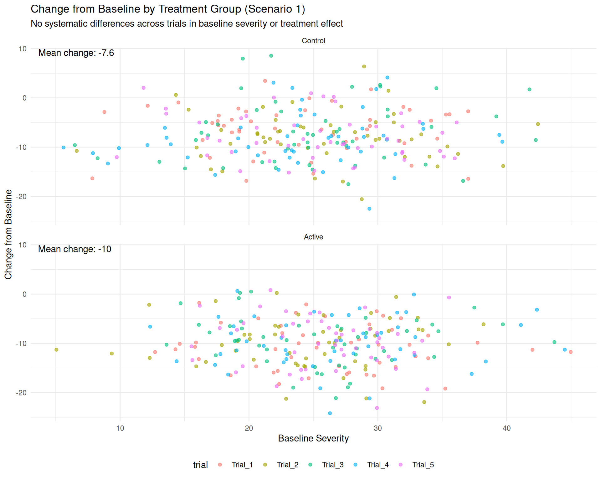
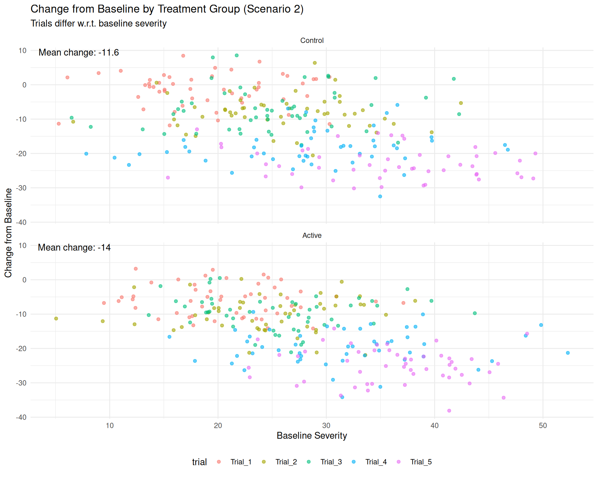

library(dplyr)
library(ggplot2)
source("R/simulate_trials.R")
# Simulate 5 trials with 100 patients each (50 per arm)
df <- simulate_trials(
baseline_means = rep(25, 5) , # Common mean baseline
trial_intercepts = rep(0,5), # No heterogeneity in outcome levels
cfb_active = rep(-9.6,5),
cfb_control = rep(-7.8,5),
n_per_arm = 50
)Hierarchical Modeling
1 Scenario 1: Pooling Homogeneous Trials
In this example, we consider a scenario in which all trials are homogeneous — that is, they share similar designs, patient populations, and a consistent treatment effect.
1.1 Simulating data
We simulate 5 trials, each with the following characteristics:
- 1:1 randomization between treatment and control arms
- Patients drawn from the same underlying population
- Identical baseline severity distribution across trials
- A constant treatment effect with no variation across trials
| Trial | N | Baseline (Active) Mean (SD) | Baseline (Control) Mean (SD) | Baseline (Overall) Mean (SD) |
|---|---|---|---|---|
| Trial_1 | 100 | 26.1 (7.0) | 23.9 (7.2) | 25.0 (7.1) |
| Trial_2 | 100 | 24.4 (6.8) | 25.7 (7.0) | 25.1 (6.9) |
| Trial_3 | 100 | 25.5 (6.5) | 24.8 (7.5) | 25.2 (7.0) |
| Trial_4 | 100 | 26.6 (7.1) | 23.6 (7.6) | 25.1 (7.4) |
| Trial_5 | 100 | 25.8 (4.9) | 25.2 (6.6) | 25.5 (5.8) |
1.2 Estimating the Pooled Treatment Effect
Figure 1 visualizes the relationship between baseline severity and change from baseline within each treatment arm using a naively pooled analysis.

The plot shows that:
- The mean change in the active group is -10
- The mean change in the control group is -7.6
1.2.1 Naive Analysis
We begin by estimating the pooled treatment effect using a simple regression model that adjusts for baseline severity but ignores trial structure. This reflects a naive analysis:
((fit_naive <- glm(outcome ~ trta + baseline, data = df)))
Call: glm(formula = outcome ~ trta + baseline, data = df)
Coefficients:
(Intercept) trtaActive baseline
-7.5005 -2.4818 0.9979
Degrees of Freedom: 499 Total (i.e. Null); 497 Residual
Null Deviance: 36140
Residual Deviance: 12620 AIC: 3041In this naive model, the estimated treatment effect is:
Treatment effect: -2.48 (95% CI: -3.37 to -1.60)
The figure below visualizes fit_naive by showing predicted outcomes across baseline severity values for each treatment group, alongside the observed data.
1.2.2 Stratified Analysis by Trial
Next, we fit a stratified model that accounts for trial-specific intercepts by including trial as a fixed effect (without a global intercept). This approach allows each trial to have its own baseline level of the outcome, effectively adjusting for differences in average outcomes across trials.
((fit_stratified <- glm(outcome ~ -1 + trial + trta + baseline, data = df)))
Call: glm(formula = outcome ~ -1 + trial + trta + baseline, data = df)
Coefficients:
trialTrial_1 trialTrial_2 trialTrial_3 trialTrial_4 trialTrial_5
-7.3626 -7.7004 -7.0886 -7.7760 -7.5772
trtaActive baseline
-2.4819 0.9979
Degrees of Freedom: 500 Total (i.e. Null); 493 Residual
Null Deviance: 170100
Residual Deviance: 12590 AIC: 3048This model yields the following treatment effect estimate (trtaActive), which is adjusted for trial-level differences and baseline covariates.
Treatment effect: -2.48 (95% CI: -3.37 to -1.59)
Note that all trial-specific intercepts are fairly similar (ranging from approximately -7.78 to -7.09), which suggests there is no strong ‘trial effect’ in the data. This is consistent with how the data were simulated — the underlying outcome-generating mechanism assumed comparable average outcomes across trials, apart from random noise.
The homogeneity in trial-specific intercepts suggests that a naively pooled model with a global intercept could be reasonable in this scenario. However, this remains a strong assumption — even small differences across trials can introduce bias if not properly accounted for. Stratifying by trial offers a more robust approach by explicitly modeling these differences, even when they appear minor.
2 Scenario 2: Pooling Trials with heterogeneous baseline risk
In this second scenario, we consider a setting in which trials differ in baseline severity and average outcome levels, as might occur when studies are conducted in distinct clinical environments or patient populations.
2.1 Simulating Data
In this scenario, we simulate five clinical trials that share a common treatment effect. However, the trials differ systematically in terms of participant eligibility criteria and overall prognosis:
- Trial 1 enrolls patients with the lowest baseline severity (mean = 20) and has a +5 intercept shift, resulting in higher overall outcome scores.
- Trial 4 includes patients with moderately higher baseline severity (mean = 30) and includes a −10 intercept shift, reducing overall outcome scores.
- Trial 5 involves the most severely affected patients (mean baseline = 35) and applies a −15 intercept shift, resulting in even lower outcome levels.
These shifts simulate trials enrolling progressively more severe populations, which report lower average outcomes across both treatment arms — despite having the same true treatment effect. This setup reflects a realistic source of between-trial heterogeneity.
# Simulate 5 trials with 100 patients each (50 per arm)
df <- simulate_trials(
baseline_means = c(20, 25, 25, 30, 35),
trial_intercepts = c(5, 0, 0, -10, -15),
cfb_active = rep(-9.6,5),
cfb_control = rep(-7.8,5),
n_per_arm = 50
)| Trial | N | Baseline (Active) Mean (SD) | Baseline (Control) Mean (SD) | Baseline (Overall) Mean (SD) |
|---|---|---|---|---|
| Trial_1 | 100 | 20.9 (6.0) | 19.0 (6.1) | 20.0 (6.1) |
| Trial_2 | 100 | 24.4 (6.8) | 25.7 (7.0) | 25.1 (6.9) |
| Trial_3 | 100 | 25.5 (6.5) | 24.8 (7.5) | 25.2 (7.0) |
| Trial_4 | 100 | 31.8 (8.1) | 28.4 (8.7) | 30.1 (8.5) |
| Trial_5 | 100 | 36.0 (6.3) | 35.3 (8.5) | 35.7 (7.5) |
2.2 Estimating the Pooled Treatment Effect
Figure 3 visualizes the relationship between baseline severity and change from baseline within each treatment arm. The figure shows that:
- Patients with higher baseline severity tend to show larger improvements (greater negative change).
- The active treatment group consistently shows a greater mean improvement than the control group, across all levels of baseline severity.
Although no effect modification was simulated in this scenario, the figure illustrates how even pooled data can suggest patterns that may reflect underlying trial design or population heterogeneity.

2.2.1 Naive Analysis
We again begin by estimating the pooled treatment effect using a simple regression model that adjusts for baseline severity but ignores potential heterogeneity across trials — that is, it assumes all patients come from a single trial.
fit_naive <- glm(outcome ~ trta + baseline, data = df)In this naive model, we obtain:
Treatment effect: -1.96 (95% CI: -3.34 to -0.57)
This result suggests a beneficial treatment effect, but it ignores systematic differences between trials — such as varying patient populations or outcome levels — which can lead to biased estimates.
The figure below visualizes fit_naive by showing predicted outcomes across baseline severity values for each treatment group, alongside the observed data.

Given the data observed in Figure 3, we may think that there is effect modification by baseline severity, with the treatment effect appearing larger in patients with higher baseline severity. We can estimate this as follows:
fit_naive_hte <- glm(outcome ~ trta + baseline + trta*baseline, data = df)2.2.2 Stratified Analysis by Trial
To better account for between-trial differences, we now fit a stratified regression model by including trial-specific intercepts (i.e., one intercept per trial):
((fit_stratified <- glm(outcome ~ -1 + trial + trta + baseline, data = df)))
Call: glm(formula = outcome ~ -1 + trial + trta + baseline, data = df)
Coefficients:
trialTrial_1 trialTrial_2 trialTrial_3 trialTrial_4 trialTrial_5
-2.3723 -7.6997 -7.0878 -17.7647 -22.5552
trtaActive baseline
-2.4817 0.9979
Degrees of Freedom: 500 Total (i.e. Null); 493 Residual
Null Deviance: 145300
Residual Deviance: 12590 AIC: 3048This model allows each trial to have its own average outcome level at baseline, while still estimating a common treatment effect and adjusting for baseline severity.
Let’s visualize the stratified model predictions to understand how trial-specific baselines affect the outcome estimates.
plot_outcome_predictions_by_treatment(fit_stratified)This plot illustrates how each trial follows its own fitted regression line, while the treatment effect (i.e., the difference between active and control) remains consistent across trials.
As shown in Figure 5, the trial-specific intercepts range from approximately -22.56 to -2.37, reflecting substantial differences in outcome levels across trials at baseline. These shifts arise from differences in the trial populations and illustrate why a naive pooled analysis (which ignores these differences) is inappropriate.
This substantial variation indicates that a naive pooling approach is no longer appropriate. Stratifying by trial ensures these baseline differences are accounted for, improving the validity of the treatment effect estimate.
The naive model estimated a treatment effect of -1.96 (SE = 0.71), without accounting for trial heterogeneity. In contrast, the stratified model — which adjusts for between-trial differences — yields a more precise estimate of -2.48 (SE = 0.45).
2.2.3 Random trial effects
Instead of estimating a separate fixed intercept for each trial, we can model trial-specific intercepts as random effects. This approach assumes that the intercepts for each trial are not unique parameters but are instead drawn from a common normal distribution. In practice, this means we estimate only the mean and standard deviation of the trial intercepts — reducing the number of parameters and increasing efficiency, especially when the number of trials is large or when each trial has limited data.
library(lme4)
((fit_random <- lmer(outcome ~ trta + baseline + (1|trial), data = df)))Linear mixed model fit by REML ['lmerMod']
Formula: outcome ~ trta + baseline + (1 | trial)
Data: df
REML criterion at convergence: 3064.33
Random effects:
Groups Name Std.Dev.
trial (Intercept) 8.318
Residual 5.053
Number of obs: 500, groups: trial, 5
Fixed Effects:
(Intercept) trtaActive baseline
-11.4222 -2.4787 0.9951 Recall the stratified model — which adjusts for between-trial differences — yielded a treatment effect of -2.48 (SE = 0.45). The random effects model produces a similar point estimate of -2.48, with the same standard error (SE = 0.45).
Although the results align in this example, the two approaches rely on different assumptions — and in other contexts, these assumptions can materially affect the estimated treatment effect.
The global fixed-effect estimates from the random-effects model are:
fixef(fit_random)(Intercept) trtaActive baseline
-11.422190 -2.478738 0.995145 These represent the overall average outcome level, treatment effect, and baseline slope across all trials.
We can extract the trial-specific intercept deviations from the global mean intercept (-11.42) as follows.
ranef(fit_random)$trial
(Intercept)
Trial_1 9.070208
Trial_2 3.776434
Trial_3 4.386367
Trial_4 -6.237760
Trial_5 -10.995250
with conditional variances for "trial" By design, the mean of these random effects is zero.
While the random effects approach is attractive for its parsimony and ability to borrow strength across trials, it can introduce bias in the trial-specific intercept terms (and thereby introduce bias in the pooled treatment effect). In the table below, we compare the intercepts estimated by the stratified model (fixed effects) with those from the random effects model.
| Trial | Intercept (Stratified Trial Effects) | Intercept (Random Trial Effects) |
|---|---|---|
| Trial_1 | -2.37 | -2.35 |
| Trial_2 | -7.70 | -7.65 |
| Trial_3 | -7.09 | -7.04 |
| Trial_4 | -17.76 | -17.66 |
| Trial_5 | -22.56 | -22.42 |
As shown in Table 1, the estimated trial intercepts differ slightly between the stratified model and the random-intercepts model. The stratified model estimates a separate fixed intercept for each trial, capturing trial-specific baseline differences directly. In contrast, the random-effects model assumes that intercepts arise from a common distribution, and applies shrinkage toward the overall mean.
This shrinkage reduces variability across trials and can lead to bias in the estimated intercepts – particularly if true trial effects differ systematically. This is reflected in the standard deviations of the trial intercepts: 8.35 for the stratified model versus 8.30 under the random-effects model, confirming a modest degree of shrinkage. Although this reduction in variability appears small, even modest shrinkage can introduce bias in the treatment effect estimate – especially when trial-level outcome differences are correlated with treatment assignment or patient characteristics. This risk is why, in pooled analyses and multi-trial synthesis, stratifying by trial using fixed effects is often preferred. Fixed-effect models estimate each trial’s intercept independently, thus preserving true baseline differences and avoiding bias introduced by shrinkage.
3 Scenario 3: Pooling Trials with heterogeneous baseline risk and treatment effect
In this third scenario, we consider a setting in which trials differ in baseline severity and average outcome levels, and where the treatment effect is modified by baseline severity.
3.1 Simulating Data
In this scenario, we simulate five clinical trials that are identical in design and treatment effect. However, Trials 4 and 5 differ systematically from Trials 1–3:
- Trial 1 enrolls patients with the lowest baseline severity (mean = 20) and has a +5 intercept shift, indicating higher overall outcomes.
- Trial 4 enrolls patients with moderately higher baseline severity (mean = 30) and includes a −10 intercept shift, lowering overall outcomes.
- Trial 5 enrolls patients with the highest baseline severity (mean = 35) and includes a stronger −15 intercept shift to further reduce outcome levels.
These shifts simulate trials that include more severely affected populations and report lower outcome scores across both treatment arms, despite having the same true treatment effect. This setup reflects a realistic source of between-trial heterogeneity.
df <- simulate_trials(
baseline_means = c(20, 25, 25, 30, 35),
trial_intercepts = c(5, 0, 0, -10, -15),
cfb_active = rep(-9.6,5),
cfb_control = rep(-7.8,5),
n_per_arm = 50,
beta_W = rep(-0.15,5),
beta_A = 0.35,
seed = 2025
)| Trial | N | Baseline (Active) Mean (SD) | Baseline (Control) Mean (SD) | Baseline (Overall) Mean (SD) |
|---|---|---|---|---|
| Trial_1 | 100 | 20.9 (6.0) | 19.0 (6.1) | 20.0 (6.1) |
| Trial_2 | 100 | 24.4 (6.8) | 25.7 (7.0) | 25.1 (6.9) |
| Trial_3 | 100 | 25.5 (6.5) | 24.8 (7.5) | 25.2 (7.0) |
| Trial_4 | 100 | 31.8 (8.1) | 28.4 (8.7) | 30.1 (8.5) |
| Trial_5 | 100 | 36.0 (6.3) | 35.3 (8.5) | 35.7 (7.5) |
3.2 Estimating the Pooled Treatment Effect
Figure 6 visualizes the relationship between baseline severity and change from baseline within each treatment arm. The figure shows that:
- Patients with higher baseline severity tend to show larger improvements (greater negative change).
- The active treatment group shows a greater mean improvement than the control group.
3.3 Assessing Between-Trial Heterogeneity in Treatment Effects
We investigate between-trial heterogeneity in treatment effects using a linear mixed model with random slopes for treatment and fixed intercepts by trial:
fit_random_hte <- lmer(outcome ~ -1 + trial + baseline:trial +
trt + (0 + trt | trial), data = df)In this formula:
-1 + trial: Includes a fixed intercept for each trialbaseline:trial: Allows each trial to have its own slope for baseline (trial-specific baseline effect)trt: Estimates the average treatment effect across trials(0 + trt | trial): Allows the treatment effect to vary randomly by trial
Note: The trt variable is modeled as a numeric binary indicator (0 = control, 1 = active treatment), rather than as a categorical factor. This allows us to directly interpret the fixed effect of trt as the average treatment effect. Additionally, modeling trt as numeric is necessary to estimate a random slope for trt per trial via (0 + trt | trial). This would not be valid if trt were treated as a factor (e.g., using trta).
The results are as follows:
Linear mixed model fit by REML ['lmerMod']
Formula: outcome ~ -1 + trial + baseline:trial + trt + (0 + trt | trial)
Data: df
REML criterion at convergence: 3051.627
Random effects:
Groups Name Std.Dev.
trial trt 0.3575
Residual 5.0977
Number of obs: 500, groups: trial, 5
Fixed Effects:
trialTrial_1 trialTrial_2 trialTrial_3
-2.2450 -6.4129 -6.9032
trialTrial_4 trialTrial_5 trt
-17.2160 -14.7140 -2.5472
trialTrial_1:baseline trialTrial_2:baseline trialTrial_3:baseline
0.8721 0.9206 0.9626
trialTrial_4:baseline trialTrial_5:baseline
1.0096 0.8546 We compute the 95% confidence interval for the average treatment effect and a prediction interval that reflects heterogeneity across trials. The prediction interval estimates the range where a future trial’s treatment effect might fall.
((ci_mu <- confint(fit_random_hte, method = "Wald")["trt", ])) 2.5 % 97.5 %
-3.500926 -1.593567 To derive an approximate 95% prediction interval for the treatment effect, we can use the following approach:
# Extract mean treatment effect
mu <- fixef(fit_random_hte)["trt"]
tau2 <- VarCorr(fit_random_hte)$trial["trt", "trt"]
var_mu <- vcov(fit_random_hte)["trt", "trt"]
# Number of studies
n_studies <- length(unique(df$trial))
df_t <- n_studies - 2
# t critical value for 95% PI
t_crit <- qt(0.975, df = df_t)
# 95% Prediction Interval
pred_lower <- mu - t_crit * sqrt(tau2 + var_mu)
pred_upper <- mu + t_crit * sqrt(tau2 + var_mu)
cbind(pred_lower, pred_upper) pred_lower pred_upper
trt -4.468743 -0.6257501The prediction interval is wide, suggesting meaningful heterogeneity in treatment effects across trials. This implies that in some future settings, the treatment could be less effective compared to the pooled estimate.
The fitted effects and prediction interval are visualized in Figure 7.
3.4 Investigating effect modification
We now explore whether the observed treatment effect heterogeneity can be explained by effect modification, using interaction terms between treatment and baseline severity.
3.4.1 Common interaction effect
A simple extension of our linear mixed model defined in Section 3.3 – with fixed intercepts per trial and random slopes for treatment – is to include a common treatment-by-baseline interaction term. This allows us to assess whether baseline severity modifies the treatment effect, assuming the interaction is constant across trials.
fit_hte_1 <- lmer(outcome ~ -1 + trial + baseline:trial + trt +
baseline:trt + (0 + trt | trial) , data = df)In this formula:
-1 + trial: Fixed intercept per trialbaseline:trial: Fixed effect for baseline severity per trialtrt: Estimates the average treatment effect across trialsbaseline:trt: Interaction between baseline severity and treatment(0 + trt | trial): Allows the treatment effect to vary randomly by trial
The results are as follows:
Linear mixed model fit by REML ['lmerMod']
Formula: outcome ~ -1 + trial + baseline:trial + trt + baseline:trt +
(0 + trt | trial)
Data: df
REML criterion at convergence: 3050.085
Random effects:
Groups Name Std.Dev.
trial trt 1.655
Residual 5.051
Number of obs: 500, groups: trial, 5
Fixed Effects:
trialTrial_1 trialTrial_2 trialTrial_3
-3.5414 -8.6981 -8.6412
trialTrial_4 trialTrial_5 trt
-19.4052 -16.6633 1.8399
trialTrial_1:baseline trialTrial_2:baseline trialTrial_3:baseline
0.9613 1.0010 1.0315
trialTrial_4:baseline trialTrial_5:baseline baseline:trt
1.0793 0.9112 -0.1610 The coefficients trt and baseline:trt define a linear relationship between baseline severity and the estimated treatment effect (Active vs Control). In Figure 8, we visualize this relationship using the model’s fixed effects, with a dashed line indicating no treatment effect.
Although the model includes a treatment-by-baseline interaction (baseline:trt), there remains evidence of heterogeneity in treatment effect across trials. This is indicated by the random slope variance for treatment (trt | trial), with an estimated standard deviation of 1.65.
3.4.2 Random within-study interaction effects
In this approach, we stratify all parameters except for the treatment-by-covariate interaction term by trial. This includes the parameter representing the treatment effect at the covariate’s reference value. All “nuisance” parameters (i.e., parameters not of primary interest) are allowed to vary across trials. A random effect is included only on the within-trial interaction term (baseline:trt), capturing heterogeneity in effect modification across trials.
fit_hte_2 <- lmer(outcome ~ -1 + trial + baseline:trial + trt:trial +
baseline:trt + (0 + baseline:trt | trial) , data = df)This stratification of all nuisance parameters – including the treatment effect at the covariate’s reference value — ensures that the estimate of baseline:trt (the treatment–covariate interaction) is informed purely by within-trial comparisons.
The fitted model is:
Linear mixed model fit by REML ['lmerMod']
Formula: outcome ~ -1 + trial + baseline:trial + trt:trial + baseline:trt +
(0 + baseline:trt | trial)
Data: df
REML criterion at convergence: 3031.288
Random effects:
Groups Name Std.Dev.
trial baseline:trt 0.000
Residual 5.049
Number of obs: 500, groups: trial, 5
Fixed Effects:
trialTrial_1 trialTrial_2 trialTrial_3
-3.7589 -9.2970 -9.0849
trialTrial_4 trialTrial_5 trialTrial_1:baseline
-20.0635 -17.4157 0.9942
trialTrial_2:baseline trialTrial_3:baseline trialTrial_4:baseline
1.0233 1.0515 1.0959
trialTrial_5:baseline trialTrial_1:trt trialTrial_2:trt
0.9255 -0.2784 3.1703
trialTrial_3:trt trialTrial_4:trt trialTrial_5:trt
2.6088 4.6171 5.2918
baseline:trt
-0.2066
optimizer (nloptwrap) convergence code: 0 (OK) ; 0 optimizer warnings; 1 lme4 warnings Since the between-trial variance in the interaction effects is close to zero, we may simplify the model by removing the random component and estimating a common interaction term across trials:
fit_hte_2b <- glm(outcome ~ -1 + trial + baseline:trial + trt:trial +
baseline:trt, data = df)The coefficients trt:trial and baseline:trt define a linear relationship between baseline severity and the estimated treatment effect (active vs control), with a trial-specific intercept and a common interaction slope. In Figure 9, we visualize this relationship using both model-predicted curves and trial-level marginal estimates.
3.4.3 Distentangling within- and across-study interaction
In this approach, we decompose the covariate baseline into two components: a within-trial centered value (cbase) and a trial-level mean (xk_mean). Specifically, we define cbase = baseline - xk_mean and include both trt:cbase and xk_mean:trt in the model. The coefficient for trt:cbase captures the within-trial treatment–covariate interaction, while the coefficient for xk_mean:trt represents the between-trial effect of the trial-level covariate mean on treatment effect.
By explicitly modeling both components, this formulation separates within- and between-trial sources of interaction. As a result, the estimate of the within-trial interaction is not biased by between-trial heterogeneity in the covariate distribution (as is the case in Section 3.4.1). This is especially important in avoiding aggregation bias when interpreting effect modification.
fit_hte_3 <- lmer(outcome ~ -1 + trial + trt + trial:baseline +
trt:cbase + xk_mean:trt +
(0 + trt | trial) + (0 + trt:cbase | trial),
data = df)The fitted model is:
Linear mixed model fit by REML ['lmerMod']
Formula:
outcome ~ -1 + trial + trt + trial:baseline + trt:cbase + xk_mean:trt +
(0 + trt | trial) + (0 + trt:cbase | trial)
Data: df
REML criterion at convergence: 3045.39
Random effects:
Groups Name Std.Dev.
trial trt 0.000
trial.1 trt:cbase 0.000
Residual 5.044
Number of obs: 500, groups: trial, 5
Fixed Effects:
trialTrial_1 trialTrial_2 trialTrial_3
-3.9838 -8.7689 -8.9990
trialTrial_4 trialTrial_5 trt
-20.0136 -17.6781 -6.5584
trialTrial_1:baseline trialTrial_2:baseline trialTrial_3:baseline
0.9840 1.0183 1.0529
trialTrial_4:baseline trialTrial_5:baseline trt:cbase
1.1020 0.9238 -0.2078
trt:xk_mean
0.1504
optimizer (nloptwrap) convergence code: 0 (OK) ; 0 optimizer warnings; 1 lme4 warnings Since the between-trial variance in the treatment effects and interaction effects is close to zero, we may simplify the model by removing the random components:
fit_hte_3b <- glm(outcome ~ -1 + trial + trt + trial:baseline +
trt:cbase + trt:xk_mean, data = df)The model includes two interaction terms: cbase:trt, which captures the within-trial interaction between the centered covariate and treatment; and xk_mean:trt, which captures the across-trial interaction effect due to variation in trial-level covariate means. Together, these coefficients define a linear relationship between baseline severity and the estimated treatment effect (active vs control), while distinguishing within- and between-trial sources of effect modification. In Figure 10, we visualize this relationship using both model-predicted curves and trial-level marginal treatment effect estimates.